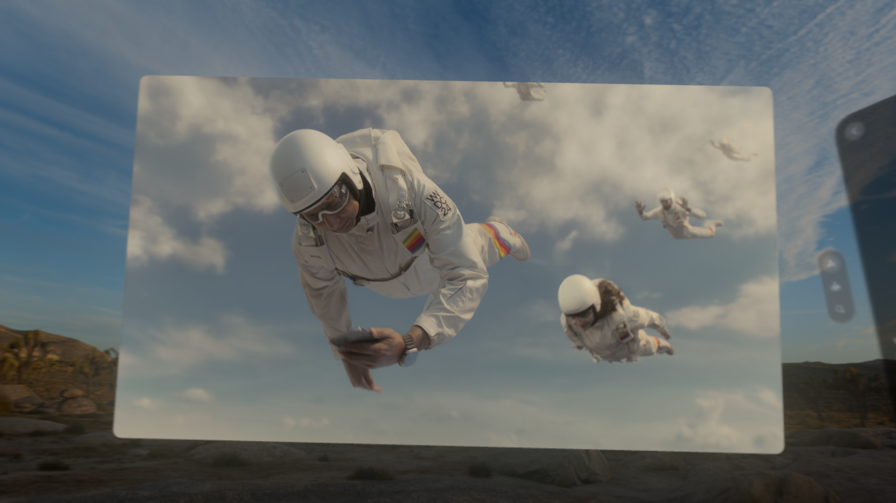
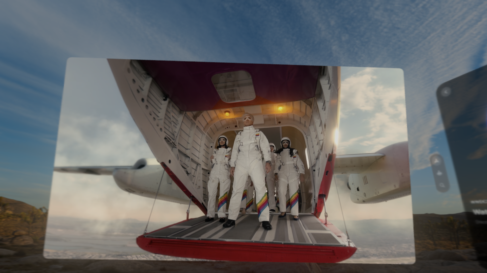

If you missed the keynote from Apple’s World Wide Developer Conference, affectionately known as Dub Dub, here’s a concise rundown: Photos and Videos- Introducing spatial photo creation
- AVP-enabled video trimming capabilities
- SharePlay now supports photo sharing
- Spatial video editing in Final Cut Pro
- New cinematic view for Safari video playback
- Multi-view display options for Apple TV, perfect for sports enthusiasts
- Travel Mode tailored for train commuters
- New home screen gestures: flip your wrist to summon Home View and Control Center
- Enhanced home screen customization akin to iPhone and Mac
- Virtual Display enhancements including a panoramic curved monitor
- Mouse support for greater interaction
- Volumetric APIs and Enterprise APIs (yes, front camera access!)
- TableTop Kit for immersive, surface-locked experiences
- Health Kit integration featuring breathing detection
- AVP-specific enhancements across apps, including mindfulness and Safari
- Apple Music updates for enhanced user experience
- Improved Guest support with setup saving capabilities
- New virtual environments, including the exotic Bora Bora
- Enhanced skin tone options for Personas
- AirPlay integration across platforms
- Enhanced dictation capabilities for messaging